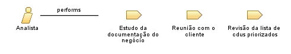

| Role: Analista |
 |
|
Relationships
 |
||
| Primary Performs | ||
|---|---|---|
| Modifies |
|
|
Main Description
| O analista no processo de sistemas de gestão web, tem tanto o papel de realizar as atividades rotineiras de uma analista como criar o documento de visão, identificar requisitos e criar casos de uso, mas também realiza a atividade de estudo inicial do negócio do cliente, buscando entender detalhes e funcionamento do negócio, como também desenvolver uma documentação do negócio para servir de consultas pela equipe ao longo do desenvolvimento. |